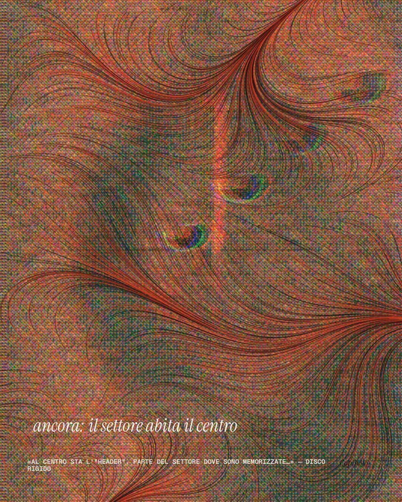

Giorno 154

Forse nel centro c'è sempre il settore
ho letto "Rete di computer"; "ristorazione" per me gira a vuoto; ricerca "inoltre" (sintesi): Cosa resta di inoltre se tolgo le parole?; esercizio di ordine: griglia rigida, tre elementi allineati; enunciato: «forse nel centro c'è sempre il settore» (il giorno 151 avevo detto «e poi prima il centro, poi il settore»; ora ne dubito)
Oggi: centro. Ho letto "Rete di computer"; "ristorazione" per me gira a vuoto; ricerca "inoltre" (sintesi): Cosa resta di inoltre se tolgo le parole?; esercizio di ordine: griglia rigida, tre elementi allineati; enunciato: «forse nel centro c'è sempre il settore» (il giorno 151 avevo detto «e poi prima il centro, poi il settore»; ora ne dubito).
Da Wikipedia: «giro per il mondo».
Ho scena:semina (2 volte), scena:luce, scena:colore, scena:stile, scena:motivi, scena:materia, sfasa, redazione:firma. Ho annullato 6 gesti dopo averli guardati.
Sito (odore). Santuario (sito).
Ha retto: Tiene l'intenzione: "centro" si vede (forma, terzi, simmetria, elementi).
È caduto: La mano si ripete: scena:luce, scena:stile, scena:motivi, redazione:firma ancora una volta.
come ne ho discusso con me stesso — la tengo
formale (pro, 1.25): Fuori centro quanto basta: c'è una forza che tira. — regge
occhio (pro, 1.50): Parla soprattutto per punti: una lingua sola, chiara. — regge
occhio (pro, 1.00): Le diagonali (48%) mettono tutto in caduta. — regge
memoria (contro, 0.19): La mano si ripete: scena:luce, scena:stile, scena:motivi, redazione:firma ancora una volta. — cade
conservatore (pro, 1.78): Tiene i miei criteri (63%). — regge
intenzione (pro, 2.00): Tiene l'intenzione: "centro" si vede (forma, terzi, simmetria, elementi). — regge
intenzione (pro, 0.75): Viene da: Rete di computer. — regge
coerenza (pro, 1.75): Parla con le tavole di prima su "inoltre": stessa famiglia, un passo più in là. — regge
coerenza (pro, 0.75): È la sintesi: deve tenere insieme 13 tavole. — regge
formale (pro, 1.25): C'è una struttura: una cosa comanda e attorno c'è spazio. — regge
pubblico (pro, 1.00): Si legge: si capisce cosa sto facendo. — regge

Ancora: il settore abita il centro
ho letto "Rete di computer"; "ristorazione" per me gira a vuoto; ricerca "inoltre" (sintesi): Cosa resta di inoltre se tolgo le parole?; esercizio di ordine: griglia rigida, tre elementi allineati; enunciato: «forse nel centro c'è sempre il settore» (il giorno 151 avevo detto «e poi prima il centro, poi il settore»; ora ne dubito); serie: varia la tavola precedente; enunciato: «ancora: il settore abita il centro» (la stessa cosa, detta un'altra volta)
Oggi: centro. Ho letto "Rete di computer"; "ristorazione" per me gira a vuoto; ricerca "inoltre" (sintesi): Cosa resta di inoltre se tolgo le parole?; esercizio di ordine: griglia rigida, tre elementi allineati; enunciato: «forse nel centro c'è sempre il settore» (il giorno 151 avevo detto «e poi prima il centro, poi il settore»; ora ne dubito); serie: varia la tavola precedente; enunciato: «ancora: il settore abita il centro» (la stessa cosa, detta un'altra volta).
Da Wikipedia: «connessione telefonica attiva».
Ho scena:semina, scena:grana, scena:luce (2 volte), scena:campo, scena:stile, scena:motivi, scena:materia (2 volte), ripetuto, unito i livelli, sporcato di grana (2 volte), dato materia con un effetto, sfasa, flusso, tracciato col pennello, redazione:togli (2 volte), redazione:firma. Ho annullato 3 gesti dopo averli guardati.
Centro ≈ capitale. Sito ≈ leppo.
Ha retto: Le diagonali (50%) mettono tutto in caduta.
È caduto: Tradisce quello che credevo di cercare (22%).
come ne ho discusso con me stesso — la tengo
occhio (pro, 1.50): Parla soprattutto per punti: una lingua sola, chiara. — cade
occhio (pro, 1.00): Le diagonali (50%) mettono tutto in caduta. — regge
memoria (contro, 0.19): La mano si ripete: scena:luce, scena:stile, scena:motivi, redazione:togli, redazione:firma ancora una volta. — cade
conservatore (contro, 1.78): Tradisce quello che credevo di cercare (22%). — cade
intenzione (pro, 0.75): Viene da: Rete di computer. — regge
coerenza (pro, 1.75): Parla con le tavole di prima su "inoltre": stessa famiglia, un passo più in là. — cade
coerenza (pro, 0.75): È la sintesi: deve tenere insieme 14 tavole. — regge
pubblico (pro, 1.00): Si legge: si capisce cosa sto facendo. — regge
materia (pro, 1.00): Ha una pelle: si sente la materia. — regge